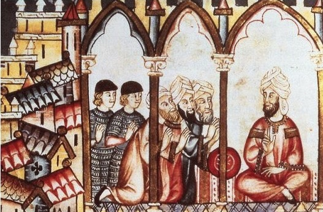
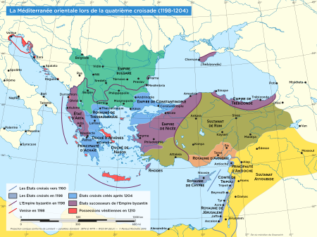

Les relations entre les francs et les autres communautes au Moyen Orient durant les Croisades
Pour étudier l’histoire des croisades et du Moyen-Orient médiéval, il est nécessaire de s’intéresser aux relations entre les différents groupes de la région. On pourrait simplifier en disant qu’il y avait quatre groupes majeurs : francs catholiques, grecs orthodoxes, arméniens et musulmans (tout aussi divers qu’ils soient : arabes, turcs, iraniens, sunnites, chiites, soufis, bektachis …). La présence des francs étant le fil conducteur des croisades, ce sont eux qui ont eu le plus de relations avec les autres groupes présents dans la région. Selon un plan dialectique (c’est à dire en opposant les tensions et les dialogues), nous étudierons les relations entre les francs et les grecs, puis avec les musulmans et enfin avec les populations autochtones, notamment les arméniens.
La rencontre de la croix et de la qamar
La guerre sainte
Les rapports entre musulmans et chrétiens ont souvent été conflictuels, comme en témoigne l’Espagne, qui fut un champ de bataille pendant près de sept siècles, puis comme en témoigneront les Balkans jusque dans les années quatre-vingt-dix.
Mais c’est durant cette période de croisade que les affrontements prennent véritablement un aspect de « choc civilisationnel ». On assiste à la naissance d’une nouveauté chez les chrétiens, les ordres religieux-militaires. Les templiers, ainsi que d’autres, sont à la fois moines et soldats.
Le thème de la croisade réunit aussi une multitude de peuples divers, occasionnellement ennemis, mais maintenant liés par la religion. On prêche même la guerre contre les « mahométans » en Normandie et dans les Flandres, territoires pourtant très éloignés de la terre sainte. L’appel de Clermont résonne dans toute l’Europe.
Un phénomène similaire se produit chez les musulmans. En 1105, le théologien Ibn Tahir as-Sulami prêche le jihad en réponse à la première croisade. Bien que son appel passe largement inaperçu, il trouvera écho chez les sultans de Syrie, notamment Nur ad-Din et Saladin.
Les divers califes (abbasides pour les sunnites, fatimides pour les chiites) se mêlent aussi à la guerre. Des chiites isma3iliens créent une secte guerrière qui lutta contre les occidentaux (mais aussi contre les sunnites), les assassins ( حشاشين, hashashin).
La cohabitation
Néanmoins, les rapports entre catholiques et musulmans ne furent pas que conflictuels. Comme en Espagne, la cohabitation des deux communautés fut l’occasion de se mélanger. Nous connaissons cette coexistence grâce à plusieurs témoignages, notamment ceux d’Ussama Ibn Munqidh, un lettré musulman qui a vécu plusieurs années avec les francs. Il nous rapporte que les croisés laissent les musulmans accéder librement à la Mosquée Al-Aqsa, lieu saint de l’islam alors contrôlé par les latins. L’adib décrit même que certains occidentaux suivaient les mêmes règles que les autochtones, notamment en ce qui concerne la nourriture.
De l’autre côté du prisme, nous savons aussi que certains catholiques avaient une fascination pour le monde musulman. Friedrich II, empereur romain, fut de ceux là. Il grandit en Sicile, vivant entouré de musulmans siciliens. Après avoir reprit Jérusalem par la plume plutôt que par l’épée, il partit visiter la ville, accompagné par un notable musulman de Naplouse. Il s’entretint longtemps avec les musulmans, à propos de philosophie (la philosophie islamique traversant alors son âge d’or) et de mathématiques.
La réunion des mondes latins et égéen
Une réconciliation après plusieurs siècles de tensions
Avant les croisades, l’empire byzantin était le principal adversaire des musulmans au Moyen Orient et en Anatolie. Néanmoins, après l’arrivée des turcs dans la région et la bataille de Manzikert (1071), l’empire grec traverse des crises dynastique ( querelle de succession entre les Doukas, les Diogènes et les Comnènes) et militaire (les turcs ont envahi l’Anatolie et les petchénègues lancent des raids dans les Balkans).
Les orthodoxes restant des chrétiens, l’empereur Alexis Comnène demanda l’aide des chrétiens occidentaux dans sa lutte contre les musulmans. Cet appel à l’aide est une des raisons du déclenchement de la première croisade. Lors du concile de Clermont, le pape Urbain II promet l’indulgence à ceux qui iraient porter assistance aux chrétiens d’orients.
Lorsque les croisés arrivent en Grèce, après avoir traversé la Hongrie et la Serbie, ils promettent de reconquérir les places byzantines prises par les musulmans. L’empereur croit d’abord que les croisés sont venus se mettre à son service, à l’instar des varègues un siècle plus tôt.
C’est ainsi qu’une fois débarqués en orient, les croisés assiègent la ville de Nicée, occupée par les turcs, dans le but de la rendre aux byzantins. Mais alors que la ville est sur le point de tomber, ce sont les byzantins qui l’occupent avant même que les croisés puissent y rentrer. L’alliance entre les deux mondes chrétiens commence déjà à s’effacer.
Une fracture entre Rome et Byzance
Les querelles entre les mondes catholiques et orthodoxes remontent au début du Moyen-âge. Elles sont tout aussi religieuses (primauté de l’évêque de Rome) que politique (revendication de l’empire romain). Et ces disputes sont loin d’être finies à l’époque des croisades.
Dès la première croisade se pose le problème des hommages. Ainsi si l’empereur de Byzance veut faire prêter hommage à tous les croisés, plusieurs refusent, notamment les allemands qui conteste l’héritage romain des byzantins.
Un autre passage de la première croisade illustre les querelles entre latins et orientaux. L’empereur grec a pour objectif la ville d’Antioche, à la frontière entre l’Anatolie et la Syrie. Les croisés promettent de lui remettre une fois la cité en leur possession, mais une fois tombée, Bohemond de Tarente se proclame « Prince d’Antioche » et refuse de rendre la ville.
Enfin, on ne pourrait pas parler des tensions entre les grecs et les latins sans évoquer la quatrième croisade. Si les trois précédentes expéditions avaient toutes eu pour cadre la Palestine et la Syrie, la quatrième croisade sera déviée vers Byzance en 1204. Les croisés, aidés par les vénitiens, pillèrent la ville plusieurs fois et désossèrent l’empire d’Orient, qui disparut pendant un demi siècle, avant de renaître en 1261. À partir de cette date, la fracture entre Orient et Occident ne put jamais se refermer.
Les relations entre les arméniens et les francs
De lointains cousins dans la foi
Une fois arrivés au Proche-Orient, les croisés avaient urgemment besoin d’alliés. C’est pour ça qu’une partie d’entre eux se tournèrent vers les Arméniens, ennemis à la fois des byzantins et des musulmans. Les arméniens, bien que chrétiens d’Orient, n’étaient pas orthodoxes. Ils avaient une Église bien séparée, ni grecque, ni catholique. Mais de fait, ils étaient assez proche de ces derniers, et leurs ennemis communs les rapprochèrent encore plus.
Après que la vague turque ait déferlé sur l’Asie Mineure, les arméniens quittèrent leurs montagnes du Caucase pour se réfugier au Sud, en Cilicie. Lors de l’arrivée des croisés, la Cilicie leur servit de base arrière pour la conquête de la Terre Sainte.
Enfin, une fois la guerre terminée, on cimenta plusieurs alliances entre les arméniens de Cilicie et les croisés, notamment par des mariages. Ainsi les trois premiers comtes d’Edesse, le royaume croisé le plus proche de la Cilicie, épousèrent chacun une princesse arménienne. Mais hélas, ces alliances ne durèrent pas longtemps.
Mais des cousins pas si proches que ça
Le premier élément de discorde entre les deux communautés est le Prince Mleh. Celui-ci est un prétendant au titre de « Roi des Montagnes » (soit roi de Cilicie) et s’empare du trône avec l’aide des musulmans. Une fois cela fait, il se met à attaquer les francs de passage sur son territoire, comme la caravane d’Étienne de Champagne.
Mais le prince Mleh ne plaît guère aux arméniens, et il est renversé et exécuté en 1175. Néanmoins, les tensions ne sont pas terminées. Un conflit frontalier naît entre la principauté d’Antioche et les arméniens et qui durera plusieurs années. Enfin, les princes d’Antioche hériteront du royaume arménien, mais ceux-ci furent plus préoccupés par la conversion de l’Église arménienne au catholicisme qu’à la défense du royaume, qui fut finalement détruit par les Mamelouks en 1375.
Conclusion
Nous avons donc vu que les francs au Moyen Orient ne sont pas qu’une population conquérante mais sont bien le moteur de la dynamique de la région à cette époque. Ces franj ont eu une grande influence sur cette région du monde et ce jusqu’à la première moitié du XXe siècle, faisant de ces régions (surtout la Syrie et le Liban) les plus occidentalisées du monde arabe. On retrouve trace de cette influence même dans les patronymes quelques huit siècles plus tard. Ainsi un personnage de la guerre du Liban, Tony Frangié, était nommé ainsi car il avait une ascendance franque.
Pour approfondir encore le sujet, nous vous conseillerons de jeter un œil aux travaux d’Ibn Al-Athir ou encore au livre d’Amin Maalouf Les croisades vues par les arabes qui est un peu plus accessible que les autres travaux.
Du côté européen, nous pourrions egalement citer certains des livres de l’Alexiade, qui evoquent la premiere croisade vue par les grecs, ou encore le très imposant Recueil des Historiens des Croisades qui contient pas moins de dix-sept volumes en cinq langues différentes.
- Hartwig Derenbourg ,Ousâma ibn Mounkidh, un émir syrien au premier siècle des croisades (1095-1188)
- Ibn al-Athir, Al-Kāmil fī At-tārīkh
- Georges Tate, L'Orient des Croisades
- René Grousset, Histoire des croisades et du royaume franc de Jérusalem